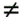
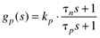
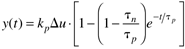
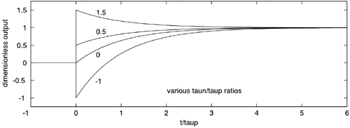

| [ Team LiB ] |
|
3.8 Lead-Lag BehaviorLead-lag transfer functions have the same order numerator polynomial as denominator polynomial. This occurs when the input has a direct effect on the output variable. In terms of the state space model (3.2), this means that D  0. Consider a lead-lag transfer function where the numerator and denominator polynomials are first order:  For a step input of magnitude Du, the output response is  A dimensionless output can be defined by dividing Equation (3.48) by kpDu, and t/tp is a natural dimensionless time. The responses to a step input at t = 0 are shown in Figure 3-12. Notice that there is an immediate response that is equal to the tn/tp ratio. This can also be found by applying the initial value theorem to Equation (3.47"/>) for a step input change (see Exercise 3). Figure 3-12. Step responses of the lead-lag example. It is rare for processes to exhibit lead-lag behavior, but many controllers exhibit such behavior. |
| [ Team LiB ] |
|